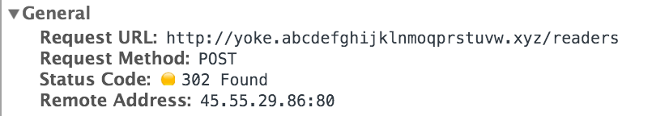

HTTP - hypertext transfer protocol - is the foundational protocol for data communications on the internet. As such, HTTP has dictated the way interactions over the internet occur. And further, it has received some important additions over the last 10 years or so - notably HTTPS - or HTTP secure, or HTTP over TLS/SSL, which I will get to later.
HTTP is a client/server model in which requests are sent from a client (generally a web-browser) to a web server. The web server receives the request (an http method), and then serves up the particular request, along with a response code, providing it exists).
The requests that a client can make are varied, but the two most common requests - or HTTP methods - are GET and POST. The GET method is meant for data retrieval and occurs every single time we access a webpage. You can see this here: These various requests and responses contain HTTP status codes. Here the request is GET and the status code is 200 - meaning the request has succeeded. The remote address is the IP address of the website.
On the other hand, The POST method is used whenever we intend to alter or create a resource associated with the web-server we are requesting. For example, when someone signs up for my poem-a-day mailer, the response of successful POST request is 201 Created: However, in this case the POST request issues a 302 Found since my controller action upon successful signup issues a redirect to another page.
What changes with HTTPS is that such exchanges are now encrypted. HTTPS is the secure version of HTTP. As it suggests, it secures all communications that occur between a client (browser) and a web-server. This is an extremely important measure to take with any site dealing with any confidential information sharing, such as banking and e-commerce in general.
In order to encrypt such communications, HTTP piggy backs ontop of a TLS/SSL certificate. This certificate is used to authenticate the server to the browser e.g. proving that Google is actually Google, and not some "man in the middle" intercepting my information. The certificate uses asymmetrical key pairs, a public and a private one in order to authenticate itself and encrypt/decrypt the exchange.
When a client sends a request to a server, they exchange some complex stuff like the SSL/TLS versions they have, the 'ciphersuites' they prefer, and a compression method. This is known as an 'SSL handshake'. At this point, the server will send over its certificate which contains its public key. At this point both parties are able to generate a shared secret with the public key which will eventually be used to encrypt the session. The session is encrypted because this communication is now only decryptable by the private key which is hosted on the web-server, and so is able to decrypt the encrypted transactions between the client and the server.
In this way, the certificate and asymmetrical key pairs act as guarantors that the website is who it says it is. By default, browsers only trust certificates which are issued by signed by Certificate Authorities, some of which can be prohibitively expensive. So when I go to to Google, I can inspect the Certificate Authority that signed the certificate. In this case its and Geotrust is owned by Symantec, the second largest certificate authority.
This works because my browser by default trusts certificates signed Geotrust, and can even verify that Geotrust has signed Google's certificate by using Geotrust's public key to confirm this. My explanations here are literally the surface of complex and mysterious beast of a technology and I refer you to these beautiful posts if you care to read any more.